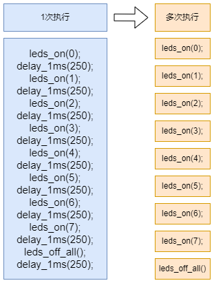

<!DOCTYPE lake>
<h2 data-lake-id="acTZd" id="acTZd"><span data-lake-id="ub6cdcc27" id="ub6cdcc27">学习目标</span></h2><ul list="u294ca4e4"><li data-lake-id="ue9466ef0" fid="u51a20283" id="ue9466ef0"><span data-lake-id="u3aceb8ac" id="u3aceb8ac">理解裸机多任务的基本概念和特点。</span></li><li data-lake-id="u43b43a1f" fid="u51a20283" id="u43b43a1f"><span data-lake-id="ua478ec23" id="ua478ec23">掌握如何通过中断计时替代传统的 delay 函数，避免阻塞式延时。</span></li><li data-lake-id="u76ee9ef8" fid="u51a20283" id="u76ee9ef8"><span data-lake-id="u6c82f62f" id="u6c82f62f">学习如何在全局中使用唯一的主 while 死循环进行任务调度。</span></li><li data-lake-id="ucec7acfe" fid="u51a20283" id="ucec7acfe"><span data-lake-id="ua7964592" id="ua7964592">通过流水灯和按键案例，理解任务分解与调度的基本原理。</span></li><li data-lake-id="u7648428b" fid="u51a20283" id="u7648428b"><span data-lake-id="u5bc31493" id="u5bc31493">泛化出一个裸机多任务框架的雏形，为后续复杂任务调度打下基础。</span></li></ul><h2 data-lake-id="a8XqQ" id="a8XqQ"><span data-lake-id="ua41a6df8" id="ua41a6df8">学习内容</span></h2><h3 data-lake-id="XA5n9" id="XA5n9"><span data-lake-id="u338d695c" id="u338d695c">时间切片</span></h3><p data-lake-id="u2feb19fa" id="u2feb19fa"><span data-lake-id="u6988aa86" id="u6988aa86">时间切片是指将 CPU 的执行时间划分为多个固定长度的时间段（称为“时间片”），每个时间段分配给不同的任务轮流执行。通过快速切换任务，从宏观上看，多个任务似乎是同时运行的，但实际上它们是在微观上交替执行的。</span></p><h4 data-lake-id="cVPvo" id="cVPvo"><span data-lake-id="u6e916f88" id="u6e916f88">代码体现</span></h4><span class="yuque-card-unsupported">[codeblock]</span><ul list="ua6d4cddf"><li data-lake-id="u5d43c8df" fid="ub364b51f" id="u5d43c8df"><span data-lake-id="u8a0f05c9" id="u8a0f05c9">将定时器设置为 1秒钟执行1000次，也就是对1秒钟进行切片1000次，1个时间片就是1ms。</span></li><li data-lake-id="ue3934212" fid="ub364b51f" id="ue3934212"><span data-lake-id="u639e40b8" id="u639e40b8">切片的1ms就是最小时间粒度。</span></li><li data-lake-id="u83e95c92" fid="ub364b51f" id="u83e95c92"><span data-lake-id="ue41c2574" id="ue41c2574">每次中断进行计数，就可以得到全局的时间计数。</span></li></ul><h3 data-lake-id="JbByL" id="JbByL"><span data-lake-id="u61b2c8d5" id="u61b2c8d5">分时调用</span></h3><p data-lake-id="udacaf67c" id="udacaf67c"><span data-lake-id="u407f27c3" id="u407f27c3">分时调用是指在一个单核处理器上，通过时间分割的方式，让多个任务轮流占用 CPU 的执行时间。每个任务只执行一小段时间后主动交出控制权，等待下一次被调用。通过这种机制，多个任务可以共享 CPU 资源，从而实现并发效果。</span></p><h4 data-lake-id="I9iHG" id="I9iHG"><span data-lake-id="u58ba851b" id="u58ba851b">代码体现</span></h4><span class="yuque-card-unsupported">[codeblock]</span><ul list="u15e82bd5"><li data-lake-id="u9d521bfd" fid="uc5abafa9" id="u9d521bfd"><span data-lake-id="u3658ce87" id="u3658ce87">全局时间进行拆分</span></li></ul><span class="yuque-card-unsupported">[codeblock]</span><p data-lake-id="ue78da6c3" id="ue78da6c3"></p><p data-lake-id="u7241a773" id="u7241a773"><span data-lake-id="u68e87f9e" id="u68e87f9e">​</span><br/></p><h3 data-lake-id="nDc1Z" id="nDc1Z"><span data-lake-id="u9930063f" id="u9930063f">时间独立管理</span></h3><p data-lake-id="ub7ff70dc" id="ub7ff70dc"><span data-lake-id="u55b82d06" id="u55b82d06">对比代码</span></p><span class="yuque-card-unsupported">[codeblock]</span><span class="yuque-card-unsupported">[codeblock]</span><ul list="ueb9b201f"><li data-lake-id="ucdc32a6a" fid="u861ce96a" id="ucdc32a6a"><span data-lake-id="u0f0d8a72" id="u0f0d8a72">各自任务函数，自己控制自己时间，无需要外部进行管理</span></li></ul><h3 data-lake-id="cvQhC" id="cvQhC"><span data-lake-id="u911b0eaf" id="u911b0eaf">总结泛化</span></h3><p data-lake-id="ub4fef47e" id="ub4fef47e"><span data-lake-id="ub959b357" id="ub959b357">裸机多任务包括</span></p><ol list="u334e682f"><li data-lake-id="u99cab6b6" fid="u74f7e29c" id="u99cab6b6"><span data-lake-id="uf17e2875" id="uf17e2875">时间切片</span></li><li data-lake-id="u2cacbc01" fid="u74f7e29c" id="u2cacbc01"><span data-lake-id="ud9ecee49" id="ud9ecee49">分时调度</span></li><li data-lake-id="u321ab93b" fid="u74f7e29c" id="u321ab93b"><span data-lake-id="u37f46bd5" id="u37f46bd5">时间独立管理</span></li><li data-lake-id="udc1a3e0d" fid="u74f7e29c" id="udc1a3e0d"><span data-lake-id="u8f27c2d4" id="u8f27c2d4">任务执行逻辑</span></li></ol><p data-lake-id="uc55640d2" id="uc55640d2"><span data-lake-id="ub9b94c20" id="ub9b94c20">抽象化具体任务特点</span></p><span class="yuque-card-unsupported">[codeblock]</span><ul list="u7fe992d1"><li data-lake-id="u29c035c3" fid="u02937947" id="u29c035c3"><span data-lake-id="u6e26c8c5" id="u6e26c8c5">period： 任务执行周期</span></li><li data-lake-id="u294b651a" fid="u02937947" id="u294b651a"><span data-lake-id="u0c48b6f0" id="u0c48b6f0">delay:  当前的绝对时间</span></li><li data-lake-id="u31644a68" fid="u02937947" id="u31644a68"><span data-lake-id="u49d3b229" id="u49d3b229">call： 任务逻辑函数</span></li></ul><h4 data-lake-id="WXCPt" id="WXCPt"><span data-lake-id="u6a08f1d1" id="u6a08f1d1">调度管理</span></h4><span class="yuque-card-unsupported">[codeblock]</span><ul list="u8d58b44b"><li data-lake-id="uc53a6d6d" fid="u5e955d5f" id="uc53a6d6d"><span data-lake-id="u4978e841" id="u4978e841">容器进行任务的注册和管理</span></li></ul><span class="yuque-card-unsupported">[codeblock]</span><ul list="ubddcec9c"><li data-lake-id="ufd62f11e" fid="uc7c57b48" id="ufd62f11e"><span data-lake-id="u7670ba33" id="u7670ba33">进行全局计数，改变状态</span></li></ul><span class="yuque-card-unsupported">[codeblock]</span><ul list="u6a598da5"><li data-lake-id="u8c779cb4" fid="u3619bbb2" id="u8c779cb4"><span data-lake-id="ud0720558" id="ud0720558">任务执行判断</span></li></ul><h4 data-lake-id="HkVnK" id="HkVnK"><span data-lake-id="u54e2a943" id="u54e2a943">任务调度入口</span></h4><p data-lake-id="u82eafb7a" id="u82eafb7a"><span data-lake-id="uf555771d" id="uf555771d">全局计数，在定时器中断中进行。</span></p><span class="yuque-card-unsupported">[codeblock]</span><p data-lake-id="u27c56f2c" id="u27c56f2c"><span data-lake-id="uf9ee1506" id="uf9ee1506">任务调度执行，在主while中进行调度执行。</span></p><span class="yuque-card-unsupported">[codeblock]</span><p data-lake-id="u6323bf16" id="u6323bf16"><br/></p><p data-lake-id="ud56b829a" id="ud56b829a"><span data-lake-id="uf8cdafcc" id="uf8cdafcc">​</span><br/></p><h2 data-lake-id="RYTRT" id="RYTRT"><span data-lake-id="u06fad685" id="u06fad685">练习题</span></h2><ol list="uae541b86"><li data-lake-id="uab337ce7" fid="uf03a6c25" id="uab337ce7"><span data-lake-id="ud45ba291" id="ud45ba291">进行裸机多任务架构搭建</span></li></ol>